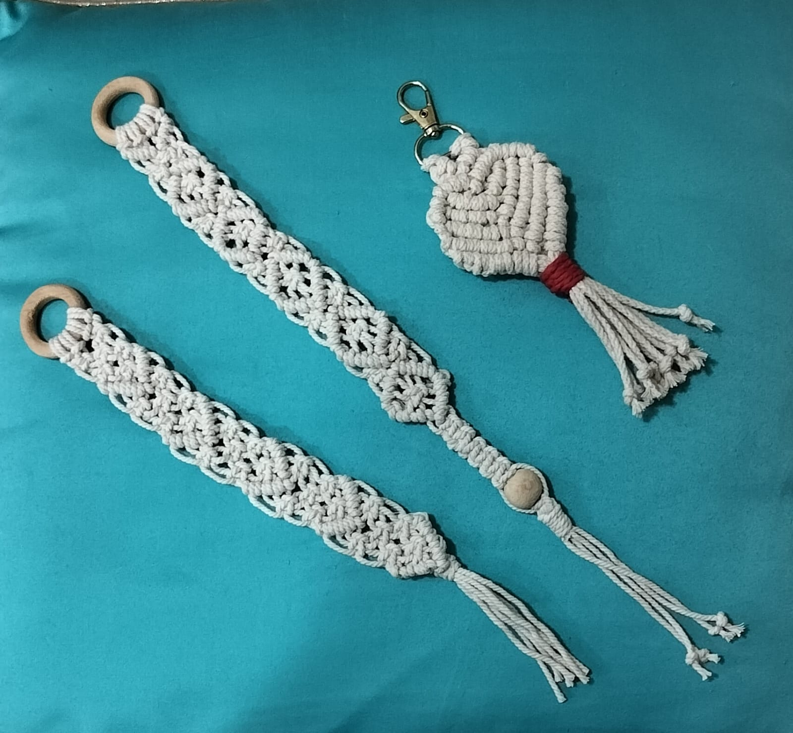

Documented creation
The ivory knot collection
A genuine photograph bringing several ivory knotwork samples together in one documented collection.
- Visible in the photograph
- Ivory cord, rings, a bead, clips and tasselled details are visible.
- Availability
- Requires personal confirmation after contact.
This description records what is visible in the approved photograph. It is not a confirmed material or product specification.
दर्ज रचना
सफेद गाँठ-कला संग्रह
सफेद गाँठ-कला के कई नमूनों को साथ दिखाती एक वास्तविक, दर्ज तस्वीर।
- तस्वीर में दिखाई देता है
- तस्वीर में सफेद डोरी, छल्ले, मोती, क्लिप और लटकन की बारीकियाँ दिखाई देती हैं।
- उपलब्धता
- संपर्क के बाद व्यक्तिगत पुष्टि आवश्यक है।
यह विवरण केवल स्वीकृत तस्वीर में दिखाई देने वाली बातों को दर्ज करता है। यह सामग्री या उत्पाद की पुष्ट जानकारी नहीं है।
What this page can honestly say
A real piece, photographed as it was.
This page does not assume exact materials, use, customisation, price or the ability to make the same piece again. Rajni ji or an authorised family member must confirm those details personally.
यह पन्ना ईमानदारी से क्या कह सकता है
एक वास्तविक रचना, जैसी थी वैसी ही तस्वीर में दर्ज।
यह पन्ना सटीक सामग्री, उपयोग, आपकी पसंद के बदलाव, मूल्य या इसी रचना को दोबारा बनाने की संभावना का अनुमान नहीं लगाता। इन बातों की पुष्टि राजनी जी या परिवार का अधिकृत सदस्य व्यक्तिगत रूप से करेगा।
Continue discovering Rajni ji’s documented work
राजनी जी की और दर्ज रचनाएँ देखिए
All creations